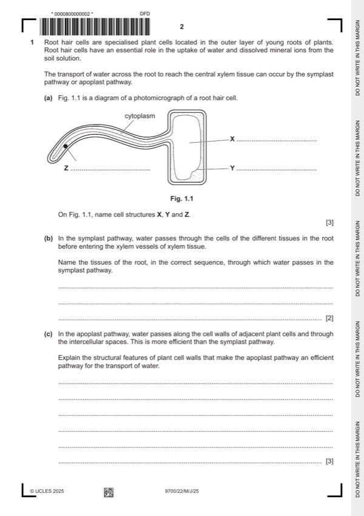

Question 1

Original paper page 2
Part 1(a) — solution
- X = (large / permanent) vacuole ; 3
- Y = tonoplast ; A vacuolar membrane
- Z = nucleus ;
Mark points
- X = (large / permanent) vacuole ; 3
- Y = tonoplast ; A vacuolar membrane
- Z = nucleus ;
Part 1(b) — solution
if correct named cells are given, allow as a tissue if plural, otherwise ignore e.g. 2
I cortex cell
A cortex cells
I root hair cell at start and, xylem / vascular bundle / stele, at end
I cell structures
epidermal (tissue) / epidermis
cortical (tissue) / cortex A parenchyma
endodermal (tissue) / endodermis
pericycle
any three in correct sequence ;;
if incorrect tissue(s) included with a correct full sequence of three, max 1 mark
only two tissues stated but are in correct sequence allow one mark
three tissues stated but not in correct sequence, and no incorrect tissues, allow one mark
Mark points
- Include the ideas shown in the solution above.
Part 1(c) — solution
any three from: 3
cellulose, (molecules / fibres), hydrophilic / allow adhesion of water (molecules) ;
idea that arrangement of cellulose (fibres) gives spaces (for water flow) ; AW e.g. many gaps
freely permeable / not impermeable, (to water) ;
A idea of few obstacles to, water, movement / flow e.g. (cell walls) not selective / allow continuous movement of water / allow
water to move at a high rate / allow all water to pass through / (offer) path of least resistance
ref. to hydrogen bonding ; in correct context
e.g. cellulose molecules form hydrogen bonds with water molecules
I hydrogen bonds between cellulose molecules
hemicellulose / pectin, hydrophilic ;
University Press & Assessment 2025 Page 8 of 21
9700/22 Cambridge International AS & A Level – Mark Scheme May/June 2025
Mark points
- Include the ideas shown in the solution above.
Part 1(d)(i) — solution
rough ER site of, protein / enzyme, synthesis and smooth ER site of, lipid / sorgoleone, synthesis ; 2
A protein modification
A lipid storage
(barley plant), higher proportion of rough ER / lower proportion of smooth ER
or
(sorghum plant), higher proportion of smooth ER / lower proportion of rough ER ;
University Press & Assessment 2025 Page 9 of 21
9700/22 Cambridge International AS & A Level – Mark Scheme May/June 2025
Mark points
- Include the ideas shown in the solution above.
Part 1(d)(ii) — solution
student X to max 3 4
(mechanism could be) exocytosis ;
R diffusion / facilitated diffusion see ecf below
plus max two details from:
for, bulk transport / larger quantities ;
idea that may be too large to exit cell (by other mechanisms) ; A are large molecules
presence of, (small) Golgi bodies ; A presence of Golgi body
ref. to vesicles as, Golgi / secretory, vesicles ; A description e.g. packaging into vesicles
vesicles, move to / fuse with, cell (surface) membrane ;
ecf if, diffusion / facilitated diffusion, stated as the mechanism:
move down a. concentration / diffusion, gradient ;
A move from high to low concentration
student Y to max 3 check one of three different options (A enzymes for acid phosphatases and vice versa)
option 1
enzymes, facilitated diffusion and sorgoleone, (simple / passive) diffusion ;
plus two marks for all information in table correct ;;
enzymes sorgoleone
hydrophilic / are not hydrophobic / polar / AW hydrophobic / not hydrophilic / non-polar / AW
pass through, transport / membrane / carrier, proteins cross hydrophobic core / between fatty acid
AW tails / phospholipid bilayer AW
A channel protein
if two marks not gained, one mark for a correct row or correct column
University Press & Assessment 2025 Page 10 of 21
9700/22 Cambridge International AS & A Level – Mark Scheme May/June 2025
Mark points
- Include the ideas shown in the solution above.
Part 1(d)(ii) — solution
option 2
sorgoleone exocytosis and enzyme facilitated diffusion ;
plus
one additional point about exocytosis ;
detail from enzyme column (shaded dark grey) ;
option 3
enzymes exocytosis and sorgoleone diffusion ;
plus
one additional point about exocytosis ;
sorgoleone column (shaded light grey) ;
University Press & Assessment 2025 Page 11 of 21
9700/22 Cambridge International AS & A Level – Mark Scheme May/June 2025
Mark points
- Include the ideas shown in the solution above.
Part 1 — solution
fewer, bronchioles / alveoli / alveolar capillaries
or
granuloma / described, causes, damage / lesions / airway lumen to decrease / AW ;
A takes up lung space
I blocks airways
Mark points
- Include the ideas shown in the solution above.
Part 1 — solution
(origin from bone marrow so) haematopoietic/results (only) in production of blood cell types ;
I multipotent
A specialise / differentiate, into red blood cells
Mark points
- Include the ideas shown in the solution above.
Part 1 — solution
colorimeter measures, absorption of light (by reaction mixture) ;
A transmission of light (through reaction mixture)
Mark points
- Include the ideas shown in the solution above.